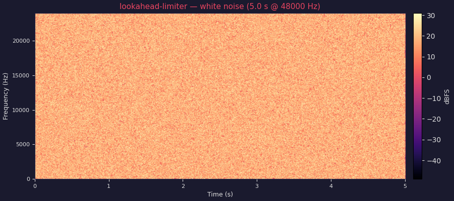
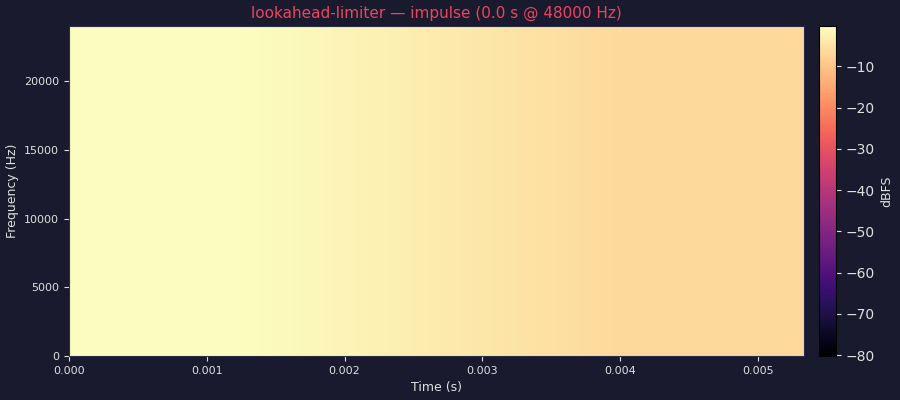
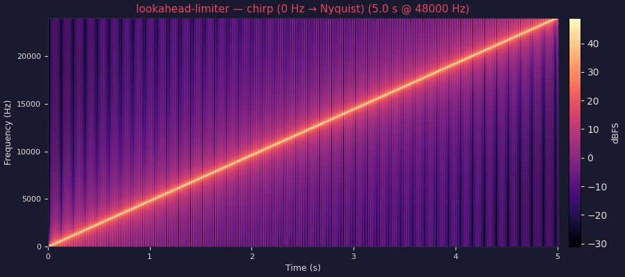

2026-05-13 18:32 UTC · commit 56c5146 · compiled with 56c5146 · crag standard-graph · 48000 Hz · 1 channel
White Noise (5 s → decay)

Impulse Response

Chirp (0 Hz → Nyquist over 5 s → decay)

| CPU Target | IPC | Cycles / block | Cycles / sample | Insns / block | Relative throughput |
|---|---|---|---|---|---|
| Intel Haswell (x86-64-v3)x86-64 | 1.283 | 73.2 | 0.1431 | 194 | |
| Intel Skylake-AVX512 (x86-64-v4)x86-64 | 1.411 | 48.7 | 0.0951 | 195 | |
| AMD Zen 3 (znver3)x86-64 | 2.428 | 32.7 | 0.0638 | 194 | |
| ARM Cortex-A57 (AArch64)aarch64 | 0.943 | 71.3 | 0.1393 | 186 | |
| ARM Neoverse N1 (AArch64)aarch64 | 1.145 | 42.0 | 0.0820 | 186 |
Block size: 512 samples at 48 kHz. Metrics are static estimates from llvm-mca (steady-state throughput). IPC = instructions per cycle; Cycles/block = throughput cycles for one 512-sample block; Cycles/sample = Cycles/block ÷ 512.
| Index | Name | Min | Max | Default | Unit |
|---|---|---|---|---|---|
| 0 | loop | 0 | 1 | 1 | |
| 1 | threshold_db | -24 | 0 | -1 | dB |
| 2 | attack_ms | 0.1 | 40 | 1 | ms |
| 3 | release_ms | 10 | 1500 | 120 | ms |